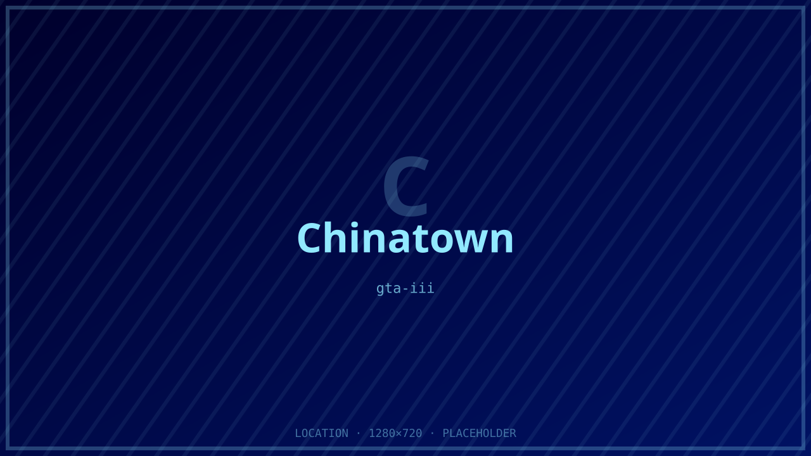
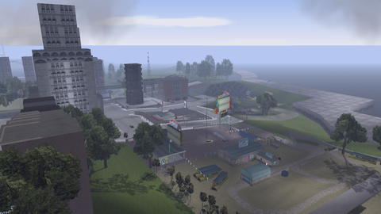
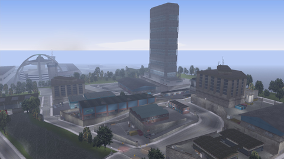
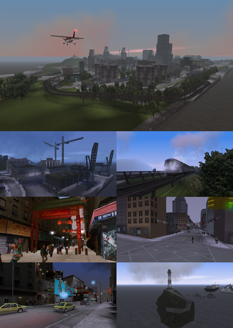
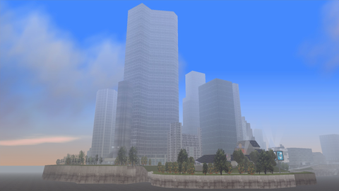
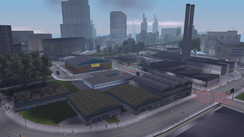
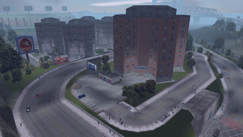

GTA III · 18 entries · partial
Locations — Grand Theft Auto III
Cities, districts and landmarks, with parent areas.
Download locations.json Whole game bundle
 DistrictBedford Point
DistrictBedford PointDowntown district with the Liberty Tree offices.
 DistrictBelleville Park
DistrictBelleville ParkCentral park area of Staunton.
 DistrictCedar Grove
DistrictCedar GroveAffluent hillside district with the Cartel mansion.

DistrictChinatownTriad territory and the fish factory.
 LandmarkCochrane Dam
LandmarkCochrane DamThe dam where the final mission takes place.
 LandmarkFrancis International Airport
LandmarkFrancis International AirportAirport used in A Drop in the Ocean and S.A.M.

DistrictHarwoodIndustrial area near the Callahan Bridge.
 DistrictHepburn Heights
DistrictHepburn HeightsDiablos territory and El Burro's base.
 CityLiberty City
CityLiberty CityThe game's setting: three islands modelled on New York City.

DistrictPike CreekResidential area near the dam.

IslandPortlandIndustrial starting island with the Leone heartland and the docks.
 DistrictRed Light District
DistrictRed Light DistrictLuigi's Sex Club 7 and the early mission hub.
 DistrictSaint Mark's
DistrictSaint Mark'sLeone family stronghold and Salvatore's mansion.
 IslandShoreside Vale
IslandShoreside ValeSuburban island with the airport, dam and Cochrane Dam finale.
 IslandStaunton Island
IslandStaunton IslandCommercial and financial island, unlocked after Last Requests.

DistrictTorringtonBusiness district and Asuka's construction site.

DistrictTrentonIndustrial district with Marty Chonks' dog food factory.

DistrictWichita GardensHousing projects and Red Jacks territory.
| Image | Location | Type | Parent area |
|---|---|---|---|
| Bedford Point | District | Staunton Island |
| Belleville Park | District | Staunton Island |
| Cedar Grove | District | Shoreside Vale |
| Chinatown | District | Portland | |
| Cochrane Dam | Landmark | Shoreside Vale |
| Francis International Airport | Landmark | Shoreside Vale |
| Harwood | District | Portland | |
| Hepburn Heights | District | Portland |
| Liberty City | City | — |
| Pike Creek | District | Shoreside Vale | |
| Portland | Island | Liberty City | |
| Red Light District | District | Portland |
| Saint Mark's | District | Portland |
| Shoreside Vale | Island | Liberty City |
| Staunton Island | Island | Liberty City |
| Torrington | District | Staunton Island | |
| Trenton | District | Portland | |
| Wichita Gardens | District | Shoreside Vale |
Field definitions
| Field | Type | Required | Notes |
|---|---|---|---|
name | string | yes | |
type | string | yes | one of: City, Borough, District, Neighbourhood, Town, Landmark, Interior, Island, Region, State |
parent | string | null | no | |
summary | string | no | |
image | string | null | no | |
verified | boolean | yes | |
source | string | no |